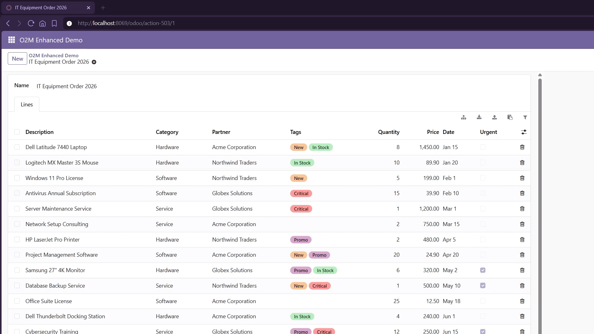
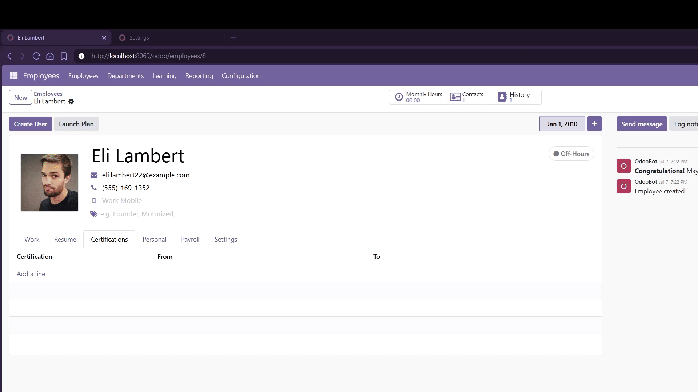
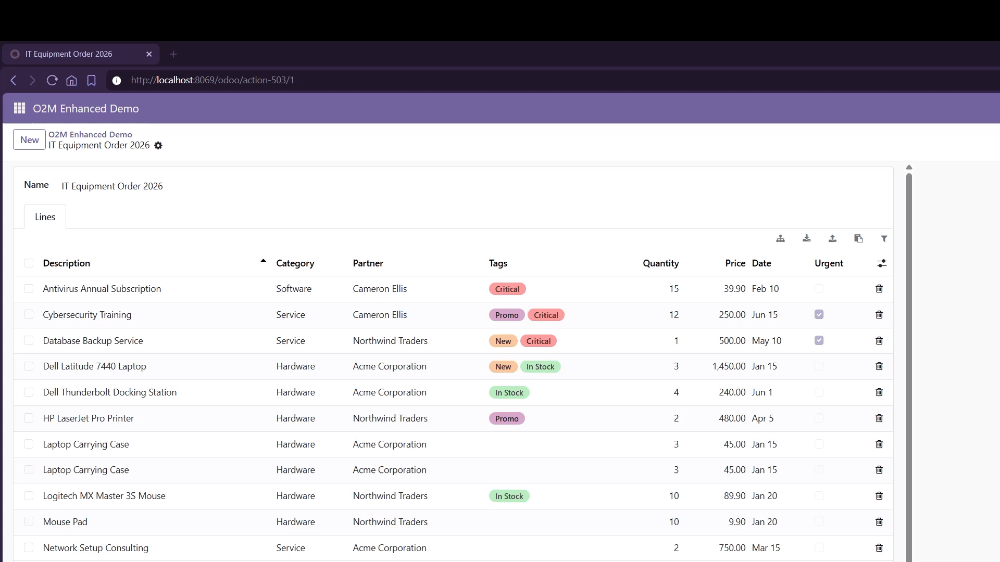
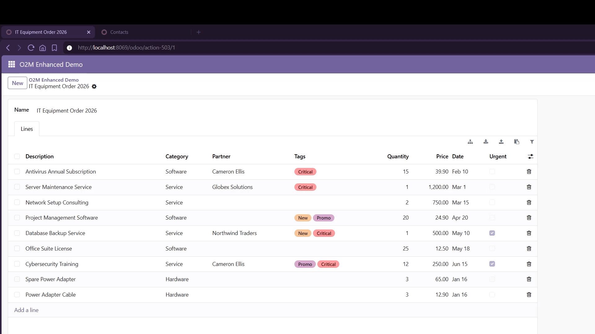
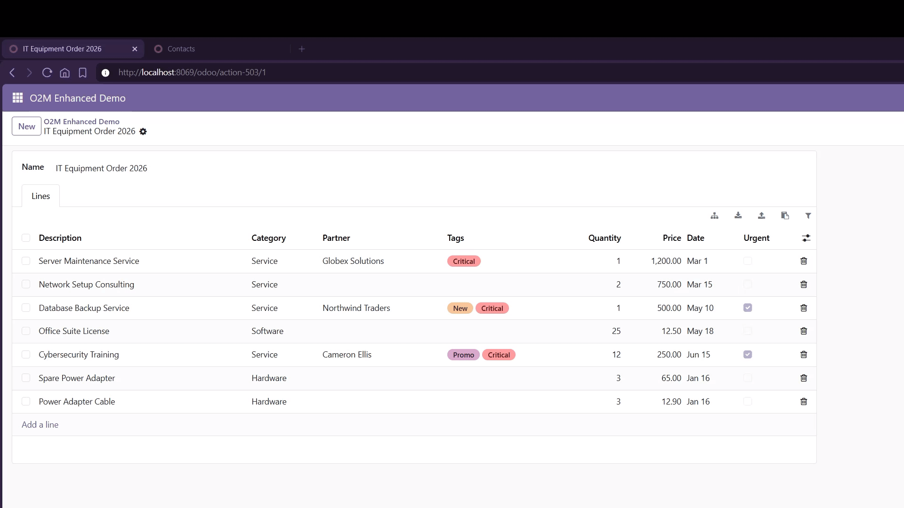
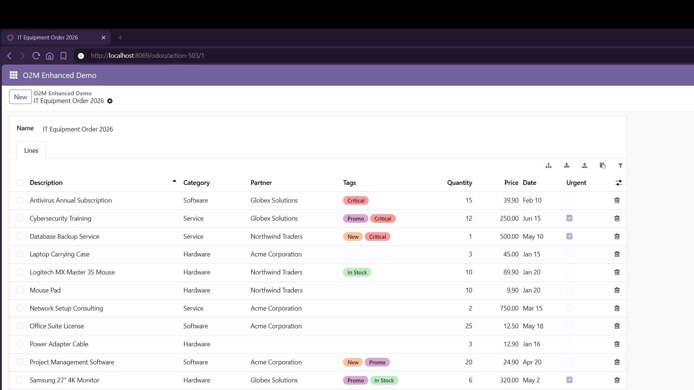
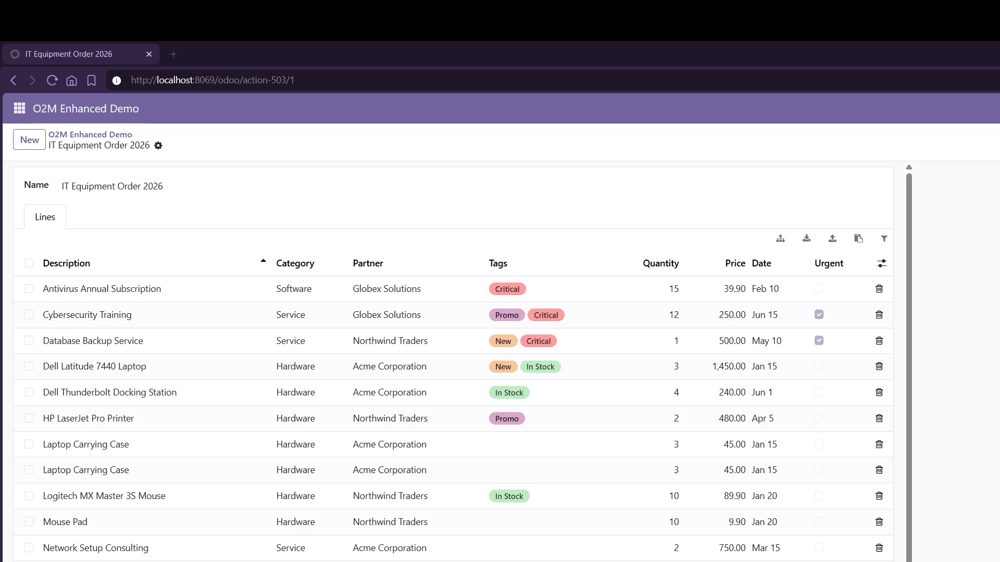
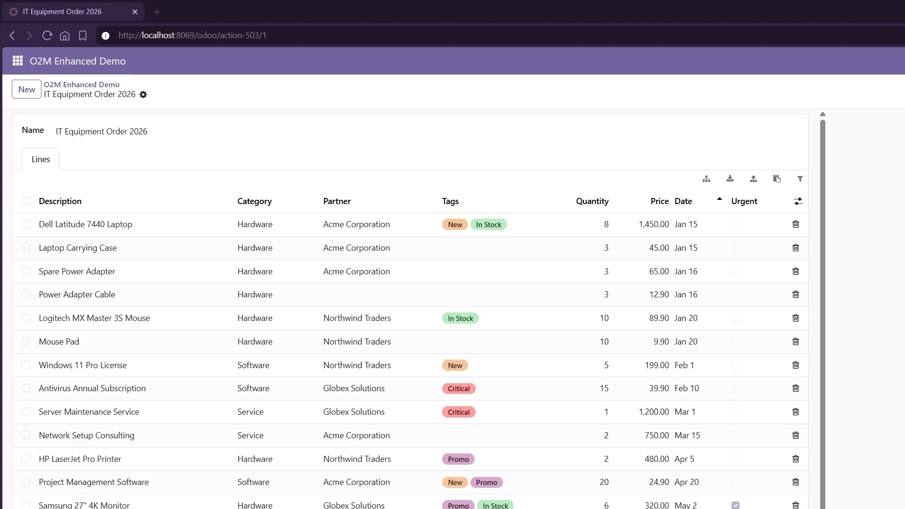
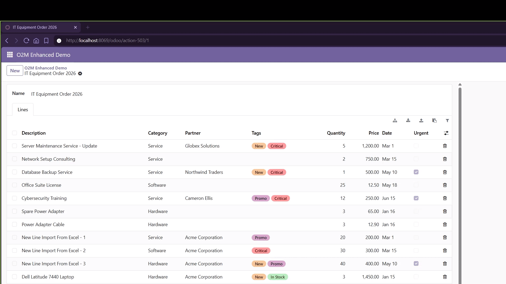

One drop-in widget that upgrades Odoo's embedded one2many lists with the capabilities users expect from a spreadsheet: Excel-like filters, bulk edit, XLSX export & import, paste from Excel, line duplication, hierarchy view. Enable it on any table from the Settings UI — no XML needed.

Odoo's embedded one2many lists (order lines, move lines, BoM components, ...)
are bare tables: no search, no export, no quick line operations. Once a document
has dozens or hundreds of lines, working with them means paging and scanning by
eye. O2M Enhanced fixes that with a single widget — enabled from
the UI in two clicks, or with widget="one2many_enhanced" in the
view XML. It is a pure client-side widget: no model changes, no stored data,
nothing written behind your back.

25,000.00 and the raw 25000, ranges (0 - 10, 5 -) and operators (>5, <=100, !=0)ID column, so it doubles as an update template.[ID] suffix in the cell (John Smith [42]) picks one explicitly.




hierarchy_field option.
save_column_widths: false in the view XML.
From the UI (recommended): open Settings › Technical › User Interface › Enhanced Tables, create a setup, pick the model and its one2many table, choose the options and save — done.
Or in the view XML: add the widget to any one2many field in a form view:
<field name="order_line" widget="one2many_enhanced">
<list>
<field name="product_id"/>
<field name="name"/>
<field name="product_uom_qty"/>
<field name="price_subtotal" sum="Total"/>
</list>
</field>
Then click the filter icon above the table to open the filter row. Press Escape in any filter input to close it and restore the list.
Every tool is configurable per view through the standard options dict:
default_open, disable_filter, disable_export,
disable_import, disable_bulk_edit, disable_duplicate,
disable_selection, disable_hierarchy, hierarchy_field,
no_filter_columns, save_column_widths.
Options written in the XML keep precedence over the UI setup.
Questions, bug reports or feature requests: meisanqo@outlook.com